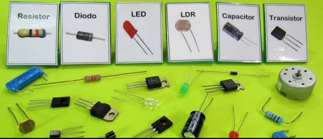
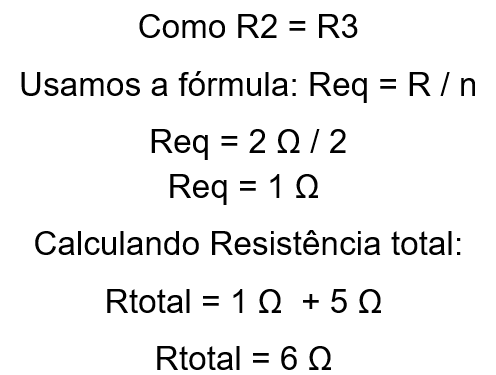

Circuitos elétricos simples
5.1 Conceitos básicos de circuitos elétricos
Nessa foto pode-se observar os componentes básicos de um circuito elétrico:

Resistor:
Resistor: É um componente utilizado para limitar a corrente elétrica em um circuito. Ele converte energia elétrica em calor e é identificado por sua resistência, medida em ohms (Ω). Resistores são amplamente usados para proteger componentes sensíveis e ajustar níveis de corrente.
Diodo
Um diodo é um dispositivo semicondutor que permite a passagem da corrente elétrica em apenas uma direção. Ele é frequentemente usado para retificar corrente alternada, proteger circuitos contra polaridades reversas e em aplicações eletrônicas gerais.
Led
É um tipo especial de diodo que emite luz visível ou infravermelha quando a corrente passa por ele. LEDs são eficientes em termos de energia e amplamente usados em displays, iluminação e indicadores.
LDR (Light Dependent Resistor)
Também conhecido como fotorresistor, é um resistor sensível à luz. Sua resistência diminui à medida que a intensidade da luz incidente aumenta. É comumente usado em sensores de iluminação e circuitos automáticos.
Capacitor
Um capacitor armazena energia elétrica temporariamente na forma de um campo eletrostático. Ele é usado para suavizar variações de tensão, filtrar sinais e em circuitos de temporização, entre outras aplicações. Sua capacidade é medida em farads (F).
Transistor
Um transistor é um componente semicondutor usado para amplificar sinais ou atuar como um interruptor eletrônico. É fundamental em circuitos digitais e analógicos, desempenhando um papel essencial na eletrônica moderna.
5.2 Fontes de energia
A fonte de energia é o coração de um circuito elétrico, fornecendo a energia necessária para que a corrente elétrica circule e os outros componentes funcionem. Exemplos de fontes de energia incluem baterias, tomadas (corrente alternada) e fontes de alimentação reguladas. Sem uma fonte de energia, o circuito não pode operar. Ela é essencial para alimentar dispositivos como LEDs, motores e sensores.
5.3 Resistência em série e em paralelo
Associação de resistoes:
Associação de Resistores é um circuito que apresenta dois ou mais resistores. Há três tipos de associação: em paralelo, em série e mista.
-
Resistência em série:
Na associação de resistores em série, os resistores são ligados em sequência. Isso faz com que a corrente elétrica seja mantida ao longo do circuito, enquanto a tensão elétrica varia.

Assim, a resistência equivalente (Req) de um circuito corresponde à soma das resistências de cada resistor presente no circuito:
Req = R1 + R2 + R3 +...+ Rn
-
Resistência em paralelo
Na associação de resistores em paralelo, todos os resistores estão submetidos a uma mesma diferença de potencial. Sendo a corrente elétrica dividida pelo ramos do circuito.
Assim, o inverso da resistência equivalente de um circuito é igual a soma dos inversos das resistências de cada resistor presente no circuito:

1/Req = (1/R1) + (1/R2) + .... + (1/Rn)
Em casos que todos os resistores em paralelos tem o mesmo valor
Utiliza-se a fórmula:
Req = R/n
Dividindo o valor de uma resistência pelo número de resistores
-
Mista
Na associação de resistores mista, os resistores são ligados em série e em paralelo. Para calculá-la, primeiro encontramos o valor correspondente à associação em paralelo e de seguida somamos aos resistores em série.
5.4 Exemplo prático
Primeiro passo:
-
Resolução (Resistência):

-
Resolução (Corrente):
Voltar à página principal